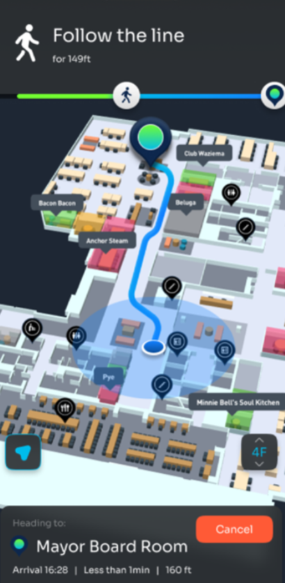

Cisco Spaces · Live Navigation
Destination
Level 2 · Bay 4 · Pre-Admission Suite

1
Enter Level 2 via the main lifts
2
Turn right along the main corridor
3
Continue past Bays 2 & 3 — Bay 4 is ahead on your right
4
Check in at the Pre-Admission Suite desk
✓
You have arrived
Bay 4 · Pre-Admission Suite · Level 2
Navigate again